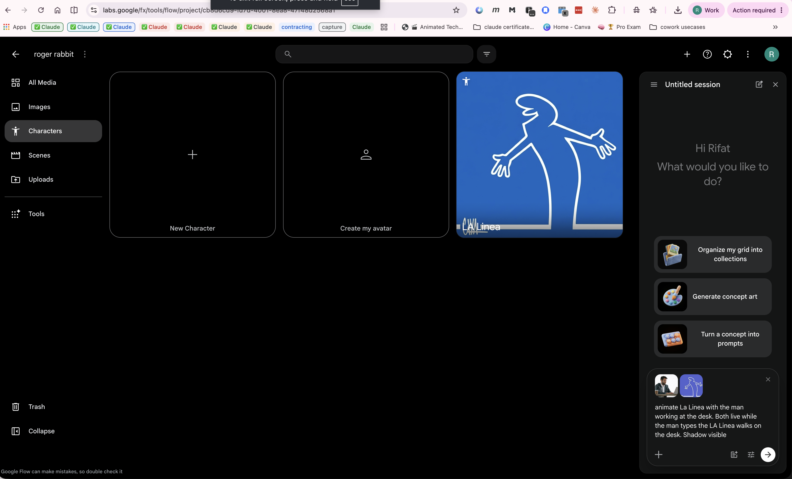

Blending live-action footage with cartoon-style animation, made with Google Flow.
Who Framed Roger Rabbit (1988) proved that hand-drawn "Toons" could convincingly share the screen with live actors and the real world. This project explores whether today's AI video tools can get us back to that same feeling — a real-world scene reimagined with the energy of classic cartoon animation, in the spirit of both Roger Rabbit and the minimalist line-drawn style of La Linea.
The plan is to use Google Flow, Google's AI filmmaking tool, to generate a short video that turns an ordinary live-action clip into something that feels hand-animated — a modern, AI-assisted take on the toon-meets-reality trick that made the original film groundbreaking.
Here's a first pass: a plain live-action clip of someone typing, generated as a starting point for the animated treatment.

See README.md for more on the original Who Framed Roger Rabbit film, and La_Linea.md for the classic minimalist animation series that inspires the line-drawn look.